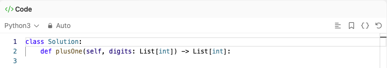

Learning Objectives:
Software Tools Needed: Web browser to access textbook and an IDE (on-line or on computer) with core Python 3.6+ loaded.
Lab Notes: Download the outline and focus questions to guide you while working through this lab. These are a useful tool for note taking and as well as studying for the quizzes and final exam.
To start this week's lab, work through the textbook's Chapter 1 which recaps string methods. Test yourself on the interactive code examples.
If you're a bit rusty on string methods, you can also work through the introductory Python textbook's sections (Chapter 9) on strings.
Try these two LeetCode challenges on strings. Work through as much as possible before looking at the hints:
Let's work through the first one:
return statement. Since almost all the challenges are structured as a "fill-in-the-function", it's a good first step. What to return? Let's look at the function:

To start, just return a dummy value that matches the type needed. Great dummy values are 0, "" (empty string), or one of the input parameters. The expected return type is a list of integers which happens to match that of the input parameter, digits. So, start by returning it:
return digitsClick run to make sure there's no syntax errors. It won't pass the tests, but we can let it run while we read more of the challenge description.
-1:
digits[-1] = digits[-1] + 1
return digitsMake sure that runs with no errors. It will also pass the easy tests when there's no carry.
If digits[-1]
9, then we need to set it to 0 and add one to digits[-1]:
if digits[-1] < 9:
#Code from before:
digits[-1] = digits[-1] + 1
else:
digits[-1] = 0
digits[-2] = digits[-2] + 1
return digitsThat will take care of large numbers that end in [...,9,9], but what about more generally?
9's at the end, we need a loop. Here's the outline to fill out with your code:
Translate the pseudocode into Python and try running it against the test cases on LeetCode. See also Program 5 (Hexidecimal Plus One.
Python has several way to format strings. In lecture, we briefly covered one way (f-strings). If you didn't work through the textbook's overview of the ways to format strings (in particular the f-strings towards the end of the section are very useful), do so now:
Test your understanding by completing the interactive coding exercises embedded in the textbook chapter.
Python has some nice tools for lists. Work through the quick tutorials on list comprehensions and zips below:
zip function combines lists (or more generally iterators) into a single object and are very useful when writing for loops. Work through the W3 Schools tutorial on zips.
Working with files follows a similar format in most programming languages:
Work through the chapter on File I/0 from the CSCI 127 textbook:
There's a way in Python to combine the opening and closing of a file into a single step, with a with, covered in Section 11.7 above. This approach is very popular, since it handles the "bookkeeping" of accessing files.
For classwork, we sketched an algorithm for double spacing a file. Using that same approach, sketch algorithms to:
For additional practice on core Python, see the HackerRank prepare series:
HackerRank: Prepare Python
Work through the challenges on Lists and List Comprehensions.
For more practice on using string methods to solve problems, here are some popular ones from LeetCode where using dictionaries is an efficient approach: